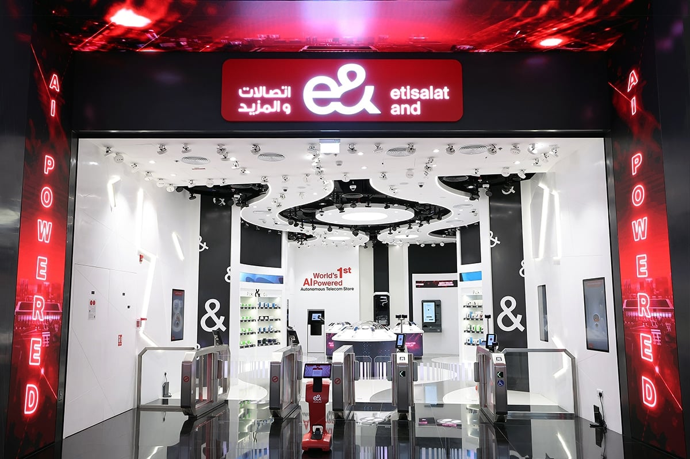

Owned three biometric products at e& UAE — Face Recognition (40 stores, mobile app, SAS machines, and 2 fully autonomous agent-less stores), Voice Biometric ("My Voice Is My Password"), and fingerprint verification. 3M+ users served via face recognition alone.

e& UAE operates 40 retail stores across the country — plus 2 fully autonomous stores with no human agents — each processing thousands of customer transactions daily. Every transaction requires identity verification per UAE regulatory requirements (ICA — Federal Authority for Identity, Citizenship, Customs & Port Security).
The existing verification process was manual, slow, and costly. The challenge was threefold: deploy face recognition across all retail touchpoints (stores, mobile app, SAS self-service machines, and autonomous stores), launch a voice biometric system branded "My Voice Is My Password," and integrate fingerprint verification — all while maintaining ICA compliance and data privacy standards.
As AI Product Owner, I was responsible for:
Conducted field research across retail stores to understand the current verification workflow, pain points, and peak-hour bottlenecks. Interviewed store managers, frontline staff, and compliance officers to map requirements.
Key findings: verification took an average of 3-5 minutes per transaction, document-based checks were error-prone during rush hours, and customers frequently complained about wait times during SIM activation.
Face Recognition (Primary product): The largest of the three. Deployed across 40 retail stores, a dedicated mobile app, SAS self-service machines, and — most notably — 2 fully autonomous stores operating with zero human agents. Customers walk in, verify identity via face recognition, complete their transaction (SIM swap, plan upgrade, device purchase), and leave. 3M+ users served.
Voice Biometric — "My Voice Is My Password": Branded voice authentication system where customers register their voiceprint and use it as a password for future interactions. Deployed across call center and IVR channels — customers authenticate by speaking naturally rather than answering security questions. Reduced call handling time and eliminated the frustration of forgotten PINs.
Fingerprint Verification: Traditional biometric for high-security transactions requiring physical presence confirmation. Integrated with ICA systems for regulatory-compliant identity verification at retail counters.
Launched a pilot across 5 high-traffic stores to validate accuracy, speed, and customer acceptance. Iterated on the UX based on real-world feedback — adjusted camera positioning for facial recognition, optimized lighting guidance for staff, and refined the voice enrollment flow to reduce drop-off.
After pilot validation, rolled out face recognition across all 40 stores, SAS machines, mobile app, and the 2 autonomous stores. The autonomous stores were the most ambitious deployment — requiring the biometric system to handle the entire customer journey without any human fallback. Coordinated hardware deployment, staff training, and integration with CRM and ICA verification APIs.
Implemented comprehensive AI governance aligned with ISO/IEC 42001: